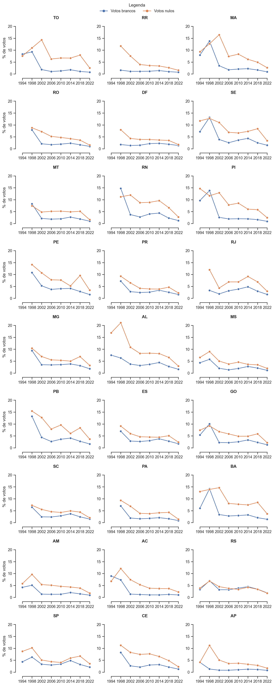
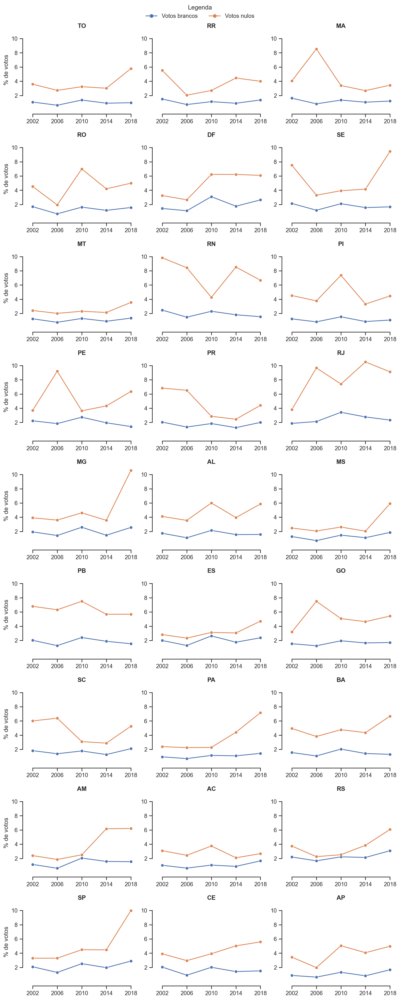

import basedosdados as bd
import pandas as pd
import matplotlib.pyplot as plt
import seaborn as snsTaxa de votos brancos e nulos para presidente, de 1994 a 2022 usando python
elections
python
Importando as bibliotecas
Download da tabela com dados das eleições brasileiras para presidente, de 1994 a 2022
votos = bd.read_sql(
'''
SELECT sigla_uf, ano, turno, tipo_eleicao, cargo,
SUM(abstencoes) AS abstencoes,
SUM(votos_nominais) AS votos_nominais,
SUM(votos_brancos) AS votos_brancos,
SUM(votos_nulos) AS votos_nulos,
SUM(votos_coligacao) AS votos_coligacao
FROM `basedosdados.br_tse_eleicoes.detalhes_votacao_secao`
WHERE ano IN (1994, 1998, 2002, 2006, 2010, 2014, 2018, 2022)
AND cargo IN ('presidente')
AND sigla_uf NOT IN ('VT', 'ZZ')
GROUP BY sigla_uf, ano, turno, tipo_eleicao, cargo
''',
billing_project_id = 'eieicoes'
)Modelando os dados
# Transforma a variável ano de numérica para categórica
votos['ano'] = votos.ano.astype(str)
factors = ['1994', '1998', '2002', '2006', '2010', '2014', '2018', '2022']
votos['ano'] = pd.Categorical(
votos['ano'],
ordered = True,
categories = factors
)
# Transforma a variável 'sigla_uf' de str para categórica
votos['sigla_uf'] = pd.Categorical(
votos['sigla_uf'],
ordered = True,
categories = votos['sigla_uf'].unique()
)
# Cria a variável 'votos_válidos' a partir da soma das variáveis 'votos_nominais' e 'votos_coligacao'.
vars = ['votos_nominais', 'votos_coligacao']
votos['votos_validos'] = votos[vars].sum(axis = 1)
# Cria a variável 'votos_total' a partir da soma das variáveis 'votos_validos', 'votos_brancos' e 'votos_nulos'.
vars = ['votos_brancos', 'votos_nulos', 'votos_validos']
votos['votos_total'] = votos[vars].sum(axis = 1)
# Cria as variáveis 'prop_votos_brancos', 'prop_votos_nulos' e 'prop_votos_validos'
for i, var, in enumerate(vars):
votos[f'prop_{var}'] = votos[var]/votos['votos_total'] *100
vars[i] = f'prop_{var}'
# Seleciona as variáveis de interesse para a visualização de dados
id_vars = ['sigla_uf', 'ano', 'cargo', 'turno']
vars_ = id_vars + vars
# Reconstrói a tabela a partir das variáveis de interesse
votos = votos[vars_].melt(
id_vars= id_vars,
value_name = 'tx'
)
# Recodifica a variável 'variable'
replace_values = ['Votos brancos', 'Votos nulos', 'Votos válidos']
votos['variable'] = votos['variable'].replace(vars, replace_values)Visualizando os dados
# Configurações gerais dos gráficos
sns.set_theme(
palette = 'deep',
style = 'ticks'
)Votos brancos e nulos para presidente, por estado, 1994-2022
Primeiro turno
# Filtra os dados
data = votos[
(votos.turno == 1) &
(votos.variable != 'Votos válidos')
]
factors = ['Votos brancos', 'Votos nulos']
data['variable'] = pd.Categorical(
data['variable'],
ordered = True,
categories = factors
)# Gráfico
plot = sns.relplot(
x = 'ano',
y = 'tx',
hue = 'variable',
col = 'sigla_uf',
col_wrap= 3,
kind ='line',
legend = True,
aspect= 1.2,
height= 3,
data = data,
markers = ['o','o'],
dashes = False,
style = 'variable'
)
# Redefine os títulos dos eixos
plot.set(
xlabel = '',
ylabel = '% de votos'
)
# Define labels para os eixos de todos os plots
for ax in plot.axes:
ax.tick_params(
labelbottom=True,
labelleft=True
)
# Define as características da legenda
sns.move_legend(
plot,
loc = "upper center",
title = 'Legenda',
ncol = 3,
)
# Ajustes
plt.subplots_adjust(
hspace=0.4,
wspace=0.2,
top = .97
)
# Estilo dos eixos
sns.despine(
offset=10,
trim=True
)
# Títulos dos plots
plot.set_titles(
col_template = '{col_name}',
fontweight='bold'
)<seaborn.axisgrid.FacetGrid at 0x7f08ba593f70>
Segundo turno
# Filtra os dados
data = votos[
(votos.turno == 2) &
(votos.variable != 'Votos válidos')
]
factors = ['Votos brancos', 'Votos nulos']
data['variable'] = pd.Categorical(
data['variable'],
ordered = True,
categories = factors
)# Gráfico
plot = sns.relplot(
x = 'ano',
y = 'tx',
hue = 'variable',
col = 'sigla_uf',
col_wrap= 3,
kind ='line',
legend = True,
aspect= 1.2,
height= 3,
data = data,
markers = ['o','o'],
dashes = False,
style = 'variable'
)
# Redefine os títulos dos eixos
plot.set(
xlabel = '',
ylabel = '% de votos'
)
# Define labels para os eixos de todos os plots
for ax in plot.axes:
ax.tick_params(
labelbottom=True,
labelleft=True
)
# Define as características da legenda
sns.move_legend(
plot,
loc = "upper center",
title = 'Legenda',
ncol = 3,
)
# Ajustes
plt.subplots_adjust(
hspace=0.4,
wspace=0.2,
top = .97
)
# Estilo dos eixos
sns.despine(
offset=10,
trim=True
)
# Títulos dos plots
plot.set_titles(
col_template = '{col_name}',
fontweight='bold'
)<seaborn.axisgrid.FacetGrid at 0x7f08ba854700>